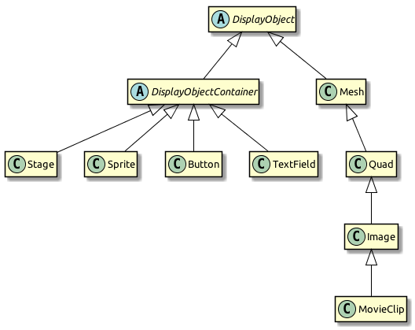
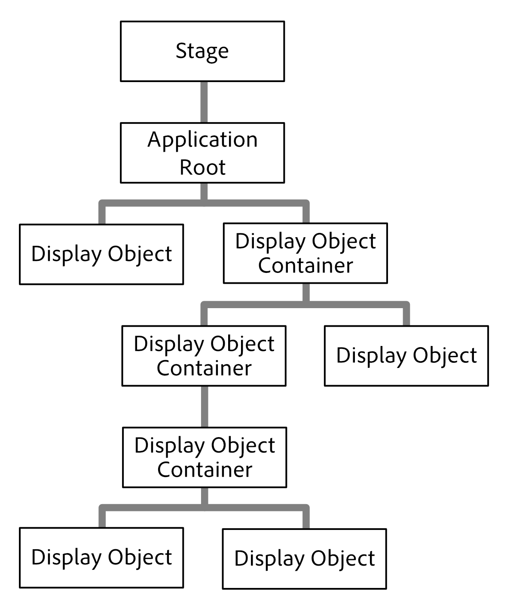
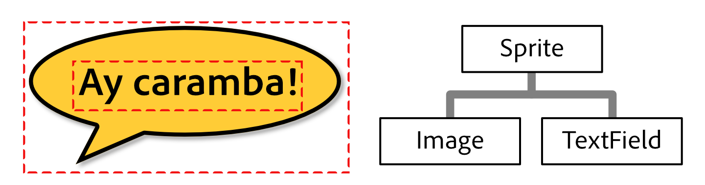
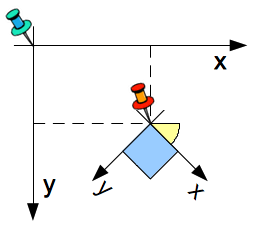
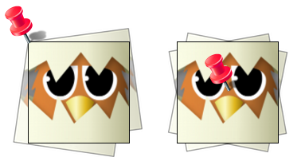

Display Programming
With all the setup procedures out of the way, we can start to actually put some content onto the screen!
In every application you create, one of your main tasks will be to split it up into a number of logical units. More often than not, those units will have a visual representation. In other words: each unit will be a display object.
Display Objects
All elements that appear on screen are types of display objects.
The starling.display package includes the abstract DisplayObject class; it provides the basis for a number of different types of display objects, such as images, movie clips, and text fields, to name just a few.
The DisplayObject class provides the methods and properties that all display objects share. For example, the following properties are used to configure an object’s location on the screen:
-
x,y: the position in the current coordinate system. -
width,height: the size of the object (in points). -
scaleX,scaleY: another way to look at the object size;1.0means unscaled,2.0doubles the size, etc. -
rotation: the object’s rotation around its origin (in radians). -
skewX,skewY: horizontal and vertical skew (in radians).
Other properties modify the way the pixels appear on the screen:
-
blendMode: determines how the object’s pixels are blended with those underneath. -
filter: special GPU programs (shaders) that modify the look of the object. Filters can e.g. blur the object or add a drop shadow. -
mask: masks cut away all parts that are outside a certain area. -
alpha: the opacity of the object, from0.0(invisible) to1.0(fully opaque). -
visible: iffalse, the object is hidden completely.
Those are the basics that every display object must support. Let’s look at the class hierarchy around this area of Starling’s API:
You’ll notice that the diagram is split up in two main sub-branches.
On the one side, there are a couple of classes that extend Mesh: Quad, Image, and MovieClip.
Meshes are a fundamental part of Starling’s rendering architecture. Everything that is drawn to the screen is a mesh, actually! Stage3D cannot draw anything but triangles, and a mesh is nothing else than a list of points that spawn up triangles.
On the other side, you’ll find a couple of classes that extend DisplayObjectContainer. As its name suggests, this class acts as a container for other display objects. It makes it possible to organize display objects into a logical system — the display list.
The Display List
The hierarchy of all display objects that will be rendered is called the display list. The Stage makes up the root of the display list. Think of it as the literal "stage": your users (the audience) will only see objects (actors) that have entered the stage. When you start Starling, the stage will be created automatically for you. Everything that’s connected to the stage (directly or indirectly) will be rendered.
When I say "connected to", I mean that there needs to be a parent-child relationship. To make an object appear on the screen, you make it the child of the stage, or any other DisplayObjectContainer that’s connected to the stage.

Figure 1. Display objects are organized in the display list.
The first (and, typically: only) child of the stage is the application root: that’s the class you pass to the Starling constructor. Just like the stage, it’s probably going to be a DisplayObjectContainer. That’s where you take over!
You will create containers, which in turn will contain other containers, and meshes (e.g. images). In the display list, those meshes make up the leaves: they cannot have any child objects.
Since all of this sounds very abstract, let’s look at a concrete example: a speech bubble. To create a speech bubble, you will need an image (for the bubble), and some text (for its contents).
Those two objects should act as one: when moved, both image and text should follow along. The same applies for changes in size, scaling, rotation, etc. That can be achieved by grouping those objects inside a very lightweight DisplayObjectContainer: the Sprite.
|
DisplayObjectContainer vs. Sprite
DisplayObjectContainer and Sprite can be used almost synonymously. The only difference between those two classes is that one (DisplayObjectContainer) is abstract, while the other (Sprite) is not. Thus, you can use a Sprite to group objects together without the need of a subclass. The other advantage of Sprite: it’s just much faster to type. Typically, that’s the main reason why I’m preferring it. Like most programmers, I’m a lazy person! |
So, to group text and image together, you create a sprite and add text and image as children:
var sprite:Sprite = new Sprite(); (1)
var image:Image = new Image(texture);
var textField:TextField = new TextField(200, 50, "¡Ay, caramba!");
sprite.addChild(image); (2)
sprite.addChild(textField); (3)| 1 | Create a sprite. |
| 2 | Add an Image to the sprite. |
| 3 | Add a TextField to the sprite. |
The order in which you add the children is important — they are placed like layers on top of each other.
Here, textField will appear in front of image.

Figure 2. A speech bubble, made up by an image and a TextField.
Now that those objects are grouped together, you can work with the sprite just as if it was just one object.
var numChildren:Int = sprite.numChildren; (1)
var totalWidth:Float = sprite.width; (2)
sprite.x += 50; (3)
sprite.rotation = MathUtil.deg2rad(90); (4)| 1 | Query the number of children. Here, the result will be 2. |
| 2 | width and height take into account the sizes and positions of the children. |
| 3 | Move everything 50 points to the right. |
| 4 | Rotate the group by 90 degrees (Starling always uses radians). |
In fact, DisplayObjectContainer defines many methods that help you manipulate its children:
function addChild(child:DisplayObject):Void;
function addChildAt(child:DisplayObject, index:Int):Void;
function contains(child:DisplayObject):Bool;
function getChildAt(index:Int):DisplayObject;
function getChildIndex(child:DisplayObject):Int;
function removeChild(child:DisplayObject, dispose:Bool=false):Void;
function removeChildAt(index:Int, dispose:Bool=false):Void;
function swapChildren(child1:DisplayObject, child2:DisplayObject):Void;
function swapChildrenAt(index1:Int, index2:Int):Void;Coordinate Systems
Every display object has its own coordinate system.
The x and y properties, for example, are not given in screen coordinates: they are always depending on the current coordinate system.
That coordinate system, in turn, is depending on your position within the display list hierarchy.
To visualize this, imagine pinning sheets of paper onto a pinboard. Each sheet represents a coordinate system with a horizontal x-axis and a vertical y-axis. The position you stick the pin through is the root of the coordinate system.

Figure 3. Coordinate systems act like the sheets on a pinboard.
Now, when you rotate the sheet of paper, everything that is drawn onto it (e.g. image and text) will rotate with it — as do the x- and y-axes. However, the root of the coordinate system (the pin) stays where it is.
The position of the pin therefore represents the point the x- and y-coordinates of the sheet are pointing at, relative to the parent coordinate system (= the pin-board).
Keep the analogy with the pin-board in mind when you create your display hierarchy. This is a very important concept you need to understand when working with Starling.
Custom Display Objects
I mentioned this already: when you create an application, you split it up into logical parts. A simple game of chess might contain the board, the pieces, a pause button and a message box. All those elements will be displayed on the screen — thus, each will be represented by a class derived from DisplayObject.
Take a simple message box as an example.
Figure 4. A game’s message box.
That’s actually quite similar to the speech bubble we just created; in addition to the background image and text, it also contains two buttons.
This time, instead of just grouping the object together in a sprite, we want to encapsulate it into a convenient class that hides any implementation details.
To achieve this, we create a new class that inherits from DisplayObjectContainer. In its constructor, we create everything that makes up the message box:
class MessageBox extends DisplayObjectContainer
{
private var _background:Image;
private var _textField:TextField;
private var _yesButton:Button;
private var _noButton:Button;
public function new(text:String)
{
super();
// these bitmap assets should be defined in project.xml
// <assets path="assets/msg_bg.png"/>
// <assets path="assets/msg_btn.png"/>
var bgBmd:BitmapData = Assets.getBitmapData("assets/msg_bg.png");
var buttonBmd:BitmapData = Assets.getBitmapData("assets/msg_btn.png");
var bgTexture:Texture = Texture.fromBitmapData(bgBmd);
var buttonTexture:Texture = Texture.fromBitmapData(buttonBmd);
_background = new Image(bgTexture);
_textField = new TextField(200, 100, text);
_noButton = new Button(buttonTexture, "no");
_yesButton = new Button(buttonTexture, "yes");
_noButton.x = 20;
_noButton.y = 100;
_yesButton.x = 120;
_yesButton.y = 100;
addChild(_background);
addChild(_textField);
addChild(_noButton);
addChild(_yesButton);
}
}Now you have a simple class that contains a background image, two buttons and some text. To use it, just create an instance of MessageBox and add it to the display tree:
var msgBox:MessageBox = new MessageBox("Really exit?");
addChild(msgBox);You can add additional methods to the class (like fadeIn and fadeOut), and code that is triggered when the user clicks one of those buttons.
This is done using Starling’s event mechanism, which is shown in a later chapter.
Disposing Display Objects
When you don’t want an object to be displayed any longer, you simply remove it from its parent, e.g. by calling removeFromParent().
The object will still be around, of course, and you can add it to another display object, if you want.
Oftentimes, however, the object has outlived its usefulness.
In that case, it’s a good practice to call its dispose method.
msgBox.removeFromParent();
msgBox.dispose();When you dispose display objects, they will free up all the resources that they have allocated. That’s important, because many Stage3D related data is not reachable by the garbage collector. When you don’t dispose that data, it will stay in memory, which means that the app will sooner or later run out of resources and crash.
| When you dispose a container, all of its children will be disposed, too. |
To make things easier, removeFromParent() optionally accepts a Bool parameter to dispose the DisplayObject that is being removed.
That way, the code from above can be simplified to this single line:
msgBox.removeFromParent(true);Pivot Points
Pivot Points are a feature you won’t find in the traditional display list.
In Starling, display objects contain two additional properties: pivotX and pivotY.
The pivot point of an object (also known as origin, root or anchor) defines the root of its coordinate system.
Per default, the pivot point is at (0, 0); in an image, that is the top left position.
Most of the time, this is just fine.
Sometimes, however, you want to have it at a different position — e.g. when you want to rotate an image around its center.
Without a pivot point, you’d have to wrap the object inside a container sprite in order to do that:
var image:Image = new Image(texture);
var sprite:Sprite = new Sprite(); (1)
image.x = -image.width / 2.0;
image.y = -image.height / 2.0;
sprite.addChild(image); (2)
sprite.rotation = MathUtil.deg2rad(45); (3)| 1 | Create a sprite. |
| 2 | Add an image so that its center is exactly on top of the sprite’s origin. |
| 3 | Rotating the sprite will rotate the image around its center. |
Most long-time OpenFL developers will know this trick; it was needed quite regularly. One might argue, however, that it’s a lot of code for such a simple thing. With the pivot point, the code is reduced to the following:
var image:Image = new Image(texture);
image.pivotX = image.width / 2.0; (1)
image.pivotY = image.height / 2.0; (2)
image.rotation = MathUtil.deg2rad(45); (3)| 1 | Move pivotX to the horizontal center of the image. |
| 2 | Move pivotY to the vertical center of the image. |
| 3 | Rotate around the center. |
No more container sprite is needed! To stick with the analogy used in previous chapters: the pivot point defines the position where you stab the pin through the object when you attach it to its parent. The code above moves the pivot point to the center of the object.

Figure 5. Note how moving the pivot point changes how the object rotates.
Now that you have learned how to control the pivot point coordinates individually, let’s take a look at the method alignPivot().
It allows us to move the pivot point to the center of the object with just one line of code:
var image:Image = new Image(texture);
image.alignPivot();
image.rotation = MathUtil.deg2rad(45);Handy huh?
Furthermore, if we want the pivot point somewhere else (say, at the bottom right), we can optionally pass alignment arguments to the method:
var image:Image = new Image(texture);
image.alignPivot(Align.RIGHT, Align.BOTTOM);
image.rotation = MathUtil.deg2rad(45);That code rotates the object around the bottom right corner of the image.
Gotchas
Be careful: the pivot point is always given in the local coordinate system of the object.
That’s unlike the width and height properties, which are actually relative to the parent coordinate system.
That leads to surprising results when the object is e.g. scaled or rotated.
For example, think of an image that’s 100 pixels wide and scaled to 200% (image.scaleX = 2.0).
That image will now return a width of 200 pixels (twice its original width).
However, to center the pivot point horizontally, you’d still set pivotX to 50, not 100!
In the local coordinate system, the image is still 100 pixels wide — it just appears wider in the parent coordinate system.
It might be easier to understand when you look back at the code from the beginning of this section, where we centered the image within a parent sprite.
What would happen if you changed the scale of the sprite?
Would this mean that you have to update the position of the image to keep it centered?
Of course not.
The scale does not affect what’s happening inside the sprite, just how it looks from the outside.
And it’s just the same with the pivot point property.
| If you still get a headache picturing that (as it happens to me, actually), just remember to set the pivot point before changing the scale or rotation of the object. That will avoid any problems. |